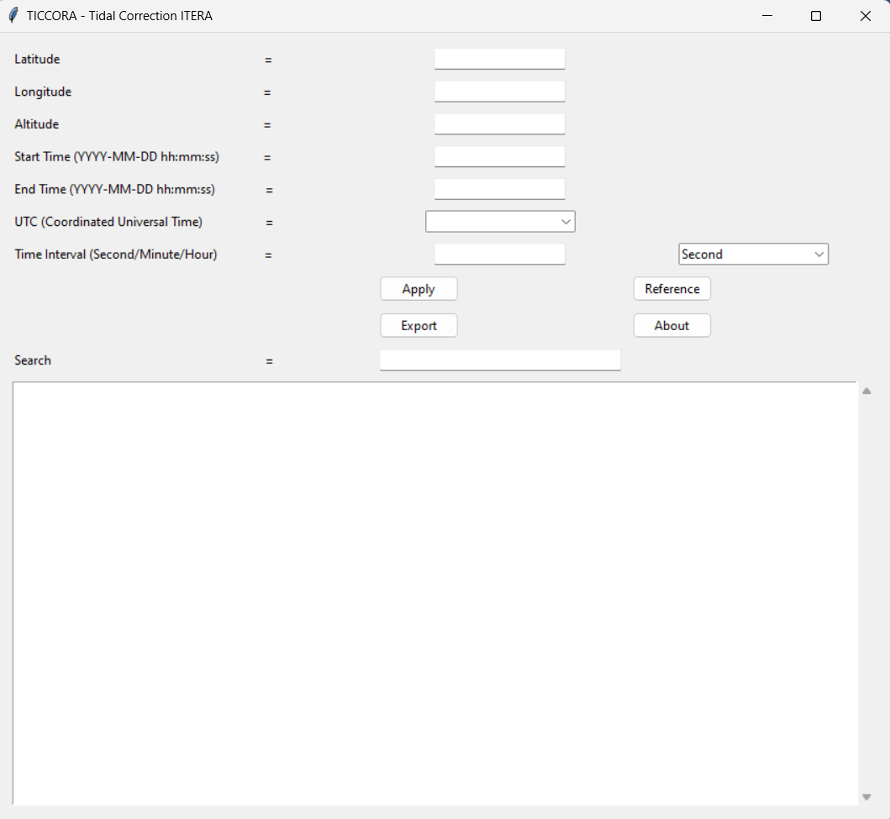

TICCORA (Tidal Correction ITERA)
Software TICCORA adalah aplikasi sederhana untuk menghitung koreksi pasang surut yang disebabkan oleh gaya tarik bulan dan matahari. Dalam perhitungan koreksi tidal yang terdapat pada software TICCORA menggunakan referensi formula yang diperhitungkan oleh Longman pada tahun 1959. Dengan menggunakan parameter seperti latitude, longitude, altitude, Start Time (YYYY-MM-DD hh:mm:ss), End Time (YYYY-MM-DD hh:mm:ss), UTC (Coordinated Universal Time), dan Time Interval (Second/Minute/Hour), Anda dapat menghasilkan perhitungan koreksi pasang surut berdasarkan input tersebut.
Adapun manfaat dari software TICCORA adalah dapat menjadi referensi bagi geofisikawan lainnya dalam memperhitungkan koreksi tidal dalam menyelesaikan pengolahan data metode gayaberat, penggunaan software TICCORA lebih ekonomis dan mudah dalam memperhitungkan koreksi tidal, dan perhitungan yang digunakan sangat spesifik dengan ketelitian time interval yang dimasukkan sebesar 1 detik. Berikut merupakan tampilan dari software TICCORA.
Berikut merupakan Sertifikat HAKI (Hak Atas Kekayaan Intelektual) pada software TICCORA. Sertifikat HAKI (Hak Atas Kekayaan Intelektual) Software TICCORA merupakan sertifikat pencatatan ciptaan program komputer sederhana dalam perhitungan Tidal Correction pada pengolahan data Metode Gayaberat. Sertifikat HAKI ini menyatakan bahwa program komputer "TICCORA" telah terdaftar pada Kementrian Hukum dan Hak Asasi Manusia Republik Indonesia.
Referensi :
1. Longman, I. M. (1959). Formula for computing the tidal acceleration due to the moon and the sun. J.Geophysics,Res, 64. 2351 - 2355.
2. Schureman, P. (1941). Manual of the harmonic analysis and prediction of tides. US Coast and Geodetic Survey, Special Publication Revised Edition, 98.
3. Wahyudi, E. J., Gunawan, I., Hidayat, M., & Sri, P. (2018). Perhitungan Koreksi Tidal dengan Menggunakan Bahasa Pemrograman Scilab untuk Pengolahan Awal Data Gravimeter Relatif. Prosiding SNIPS 2018, July 2018, 13–20.